Diagram-referencia
Ez az oldal a diagram-készítés műszaki referenciája a tartalmi sávok számára —
nem része a résztvevői navigációnak. Minden itt bemutatott minta kötelező szerződés: külső Mermaid SVG
<img>-ként, akadálymentes egyedi inline SVG, felirat, teljes szöveges megfelelő,
és opcionális, felhasználó által vezérelt léptetés.
1. Külső Mermaid SVG — a kötelező beágyazási minta
A forrás a media/rug-kor.mmd, a kimenet build-időben készül
(node toolkit/material-site/render-diagram.mjs render <oldal-könyvtár>) —
futásidejű Mermaid vagy CDN nincs. Az <img> kötelezően kap magyar
alt szöveget, belső méreteket, feliratot és teljes szöveges megfelelőt.

| Lépés | Mi történik? | Hová vezet? |
|---|---|---|
| Jóváhagyott specifikáció | A munka egyetlen bemenete. | Készítő (agent) |
| Készítő (agent) | Elkészíti a változtatást. | Automatikus ellenőrzési pontok |
| Automatikus ellenőrzési pontok | Gépi ellenőrzések futnak. | Független ellenőrző |
| Független ellenőrző | Friss kontextussal dönt. | Elfogadva → visszakereshető eredmény · Javítandó → Javító (agent) |
| Javító (agent) | A megerősített hibákat javítja. | Vissza az automatikus ellenőrzési pontokra |
2. Egyedi inline SVG — az akadálymentességi minta
Egyedi (nem Mermaidből készült) ábrához kötelező: role="img", egyedi
<title id> és <desc id> a rájuk mutató
aria-labelledby-jal, látható szöveges címkék, és a teljes szöveges megfelelő.
| Elem | Szerep |
|---|---|
| Forrás (media/*.mmd) | A diagram szerkeszthető definíciója; ebből készül a kimenet. |
| Kimenet (media/*.svg) | Build-időben renderelt, normalizált statikus kép. |
| Nyilvántartás (diagrams.json) | Mindkettő SHA-256 lenyomata + a tanulói kérdés; az elavulást gépi ellenőrzés fogja. |
3. Opcionális léptetés — JavaScript nélkül
Ha egy folyamatot lépésenként érdemes felfedezni, natív <details> elemeket
használunk: billentyűzettel teljes értékű, JavaScript és hálózat nélkül is működik, nyomtatásban
minden lépés láthatóvá válik.
1. lépés — a specifikáció megérkezik a készítőhöz
A készítő agent egyetlen bemenete a jóváhagyott specifikáció; ami nincs benne, arról nem dönthet.
2. lépés — gépi ellenőrzési pontok futnak
Az automatikus ellenőrzések a review előtt szűrik a nyilvánvaló hibákat.
3. lépés — a független ellenőrző dönt
Friss kontextusú döntés: elfogadás vagy megerősített javítási lista a javítónak.
4. Parancsok
Render: node toolkit/material-site/render-diagram.mjs render <oldal-könyvtár> ·
Frissesség/biztonság: … check <oldal-könyvtár> ·
Beágyazási szerződés: … check-page <oldal.html> ·
Önteszt: … --self-test ·
Normalizálás: node toolkit/material-site/normalize-svg.mjs <fájl.svg>